WordPress is famous for its five minute installation. Easiest way to do it is by following steps described at WordPress Codex page:
http://codex.wordpress.org/Installing_WordPress
There are three ways to install a theme in WordPress:
You can find out more about all three in detail at WordPress Codex page:
http://codex.wordpress.org/Using_Themes#Adding_New_Themes
There are two ways to install a plugin in WordPress:
You can find out more about both in detail at WordPress Codex page:
http://codex.wordpress.org/Managing_Plugins#Installing_Plugins
A child theme (Gumbo Child) that is meant to help jumpstart your customization efforts is included. It’s very important to install and use it, because updating the theme almost never results in unexpected malfunctions. Also, all customization work is safely preserved.
To find out more about child themes, visit the link:
In addition to being coded with WordPress best practices in mind, Gumbo is responsive and will adapt to any screen size. Icons used throughout the theme are part of Genericons icon font and will look good regardless of device’s pixel density.
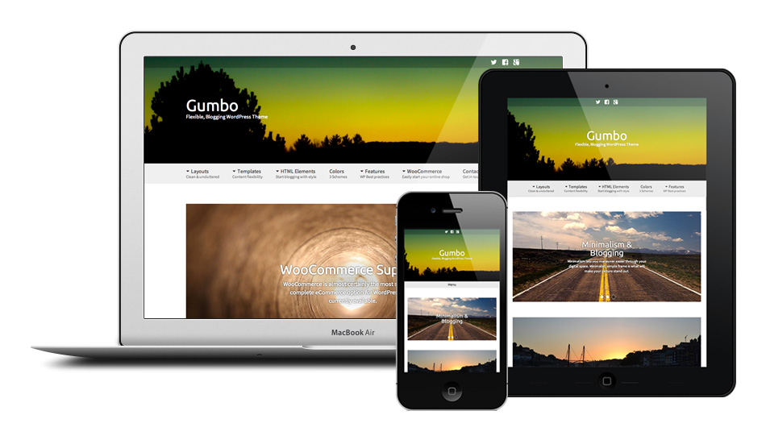You can scan the code with your mobile device and see Gumbo in action.
With Gumbo you can not only blog and showcase your photos or other digital art, you can also sell it. WooCommerce plugin (free) is required for this feature.
http://docs.woothemes.com/document/installation/
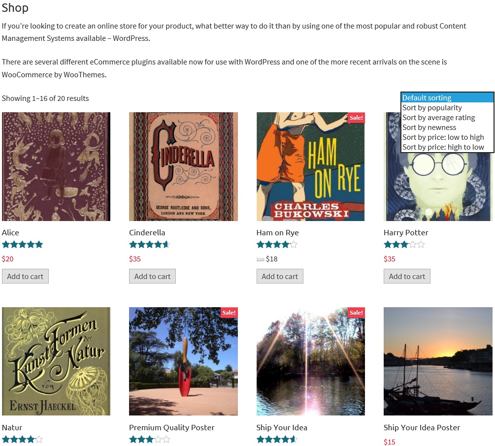WooCommerce image settings are located in WooCommerce > Settings > Catalog. For best visual representation use these image sizes:
You can use Gumbo’s Masonry page template to create Masonry (Pinterest-like) layout. Using Masonry page template is explained in Page Templates section.
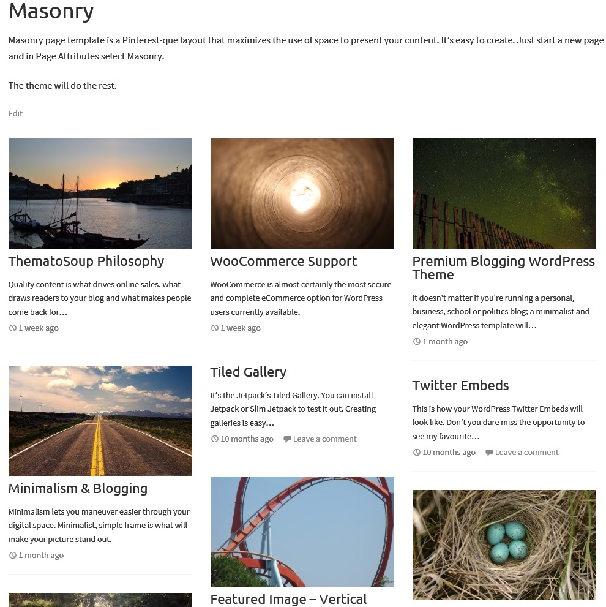All text strings used in the theme are translatable. Translating them is very easy and requires no coding skills. You can use this guide:
http://premium.wpmudev.org/blog/how-to-translate-a-wordpress-theme/
Standardized Theme Hook Alliance hooks are used throughout the theme, making it very easy to customize it via a child theme or a plugin. If you’d rather not touch the code and just need to add some content to a specific location in your site, you can use THA Hooks Interface plugin to do so.
By installing the plugin, you’ll be able to customize Gumbo from within dashboard by hooking into Theme Hook Alliance hooks.
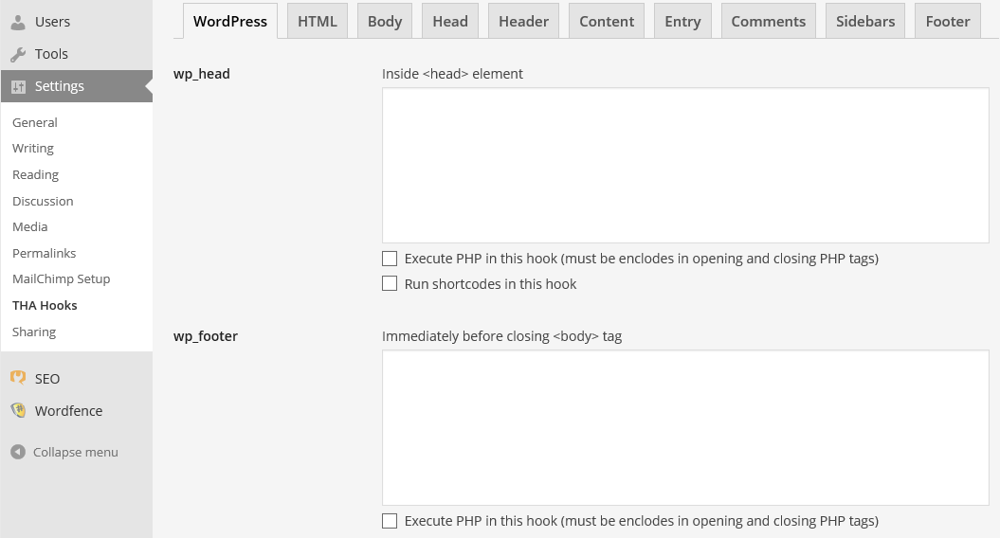Gumbo declares support for the following Theme Hook Alliance hooks:
THA Hooks Interface plugin allows you to easily alter theme functionality using dashboard interface.
The icons are typically placed on the homepage or in the header. These icons link directly to your social media space and social menu is a way to easily display your links in the top menu.
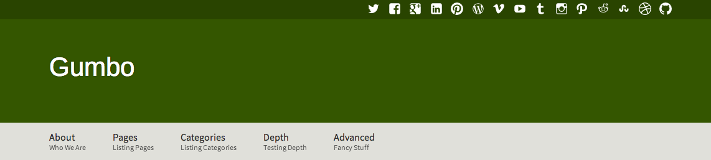To do this:
Supported social networks:
Gumbo has 6 widget areas:
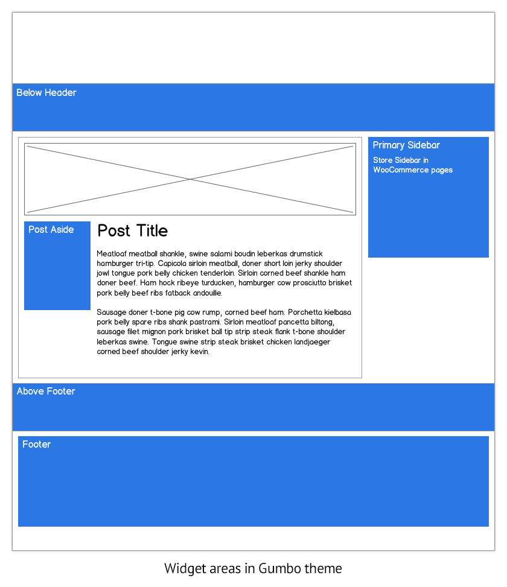Widget areas:
note: Store Sidebar is used with WooCommerce Store pages and is available once you install the WooCommerce plugin.
Since it’s the most used widget of them all, we’ve decided to add a new layer of functionality to the Text widget.
You can now select:
If you use Jetpack plugin, by enabling its infinite scroll module you can activate this feature for blog archives. Infinite scroll will kick in instead of pagination, so discovering more of your content is just scroll away.
To do this go to Jetpack > Infinite Scroll > Activate. Once you do this click Configure. You’ll be redirected to Settings > Reading > To infinity and beyond. Enable it and that’s it.
All Gumbo theme options can be set in Theme Customizer screen (Appearance > Customize). This way you can preview all the changes you make before you save them and make them visible to your site visitors as well.
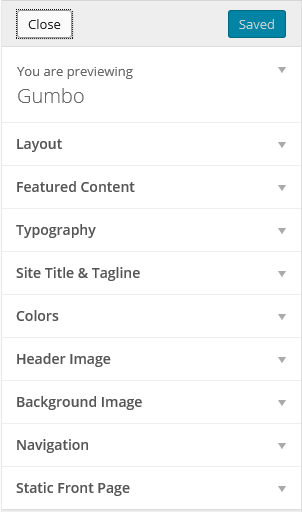Theme Customizer options:
You can pick from some of the most popular Google Fonts for your headings and body text. You can also set your headings to be bold or regular weight, as well as uppercase.
All typography options can be found in Typography section of Theme Customizer (Appearance > Customizer). As you select body and heading font in dropdowns on the left side you will be able to preview them on the right. Once you’re pleased with selection you made, save your changes and they will be visible to your site’s visitors.
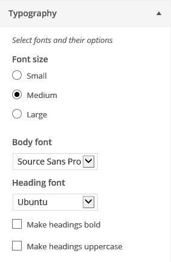Fonts you’ll find are carefully picked and include:
When you install Gumbo you can use a color or an image as your site’s background. Using either one will create “boxed layout” and both can be set from Theme Customizer or Custom Backgrounds administration page (Appearance > Background). This documentation explains only how to do it from Theme Customizer, if you’d like to use Custom Backgrounds admin page, use this guide:
http://codex.wordpress.org/Appearance_Background_Screen
Once you’re at Theme Customizer Screen (Appearance > Customize), you can either upload a new image or select one of background images you have already uploaded. After you have selected the image you can choose its display options:
After you have set your background image options, click Save & Publish button to make them visible to your visitors.
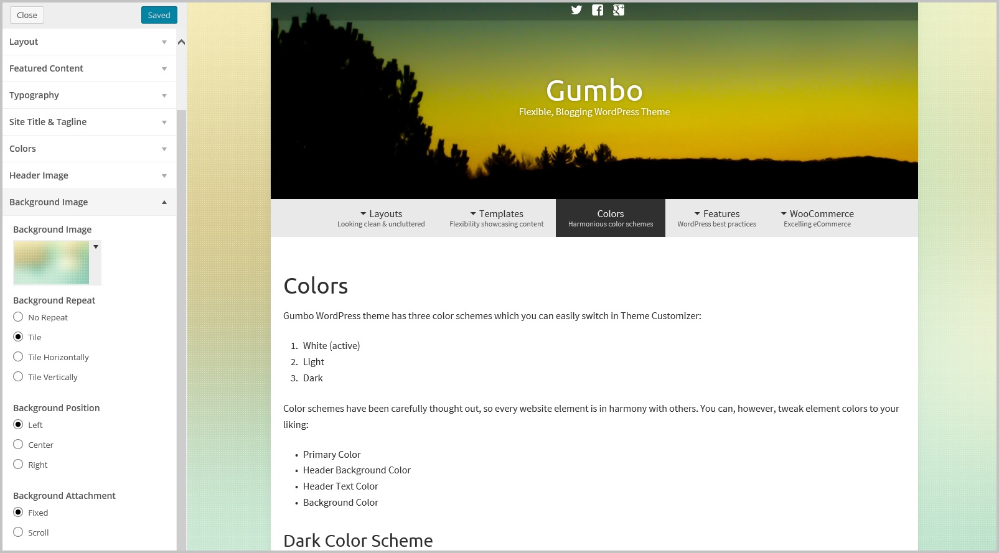You can remove a background image and go back to fluid layout by clicking “Remove Image” link and saving your options.
If you’d rather use a color background, you can set it from Theme Customizer’s Background Image section as well. Click the Select Color button, select a color from the color picker or enter a color’s HEX code and save your options.
You can remove a background color you previously set by clicking Clear button and saving your options.
If you’re like to add some more flavour to your site you can also custom header image that will be shown in all pages. This can be done from Custom Header admin page (Appearance > Header) and Theme Customizer.
To select header image(s) go to Custom Header admin page. There you will be able to upload new images or select them from your site’s Media Library. You can also select header text color, to make it more visible when shown on top of background image and decide whether you want to hide header text.
Images should be 1600x320 px or larger. If you upload a larger image, you will be able to crop it after uploading it.
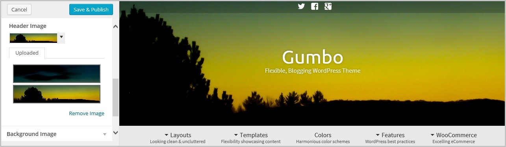Once you have uploaded one or more header images, you can go to Theme Customizer and preview your site with each one of them selected. When you are happy with the results, click Save & Publish.
You can also set custom header color using header background color picker.
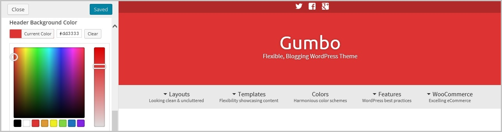The theme has three navigation menu locations:
To use them first you need to create some menus. You can create, edit and delete navigation menus in Appearance > Menus page. A new menu is created by clicking “create new menu” link in that page. Type in a name for your menu, click Create Menu button and you’ll be able to add links to it.
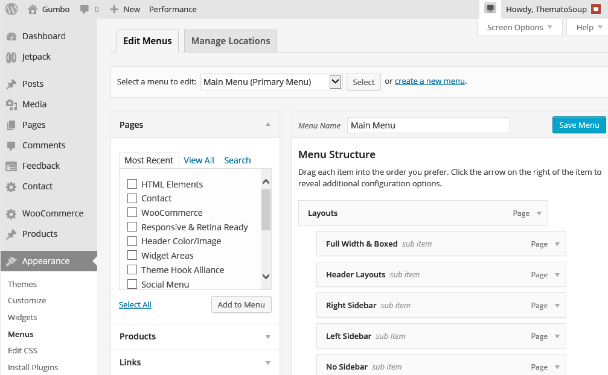You can change the order and placement of menu items by dragging and dropping the items to change their order. To create sub-menus or “drop-down” style menus, drag individual items to the right to “nest” them under a given parent tab. You can undo this by dragging them to the left.
To add description to your menu items, use the “Description” field.
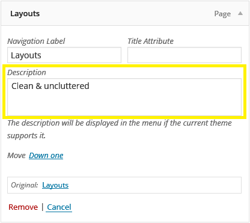The descriptions will appear on your website underneath your menu items.
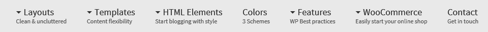Once you have created and saved your menu, you can assign it to one of three menu locations by switching to Manage Locations tabs in Appearance > Menus page. Header Menu will display submenus up to five levels deep, while Footer Menu and Top Menu are one dimensional and don’t display submenus.
Even though the theme has three menu locations, you can create as many menus as you like and use them in your site. For example, you can display them in one of widget areas using Custom Menu widget.
You can also assign menus to menu locations from Theme Customizer screen (Appearance > Customizer), but you must create the menus first in Appearance > Menus page.
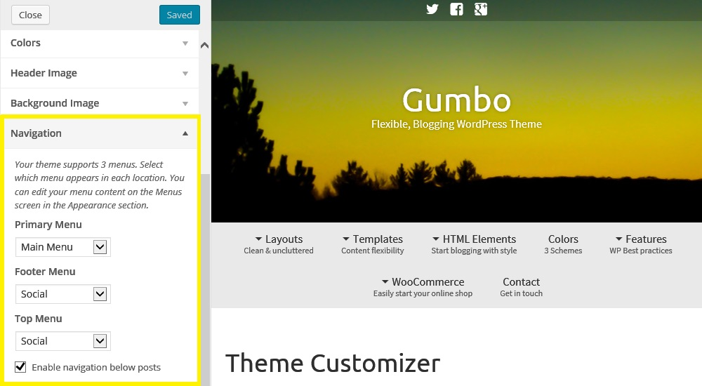To read more on how to work with menus in WordPress go to the official page:
http://codex.wordpress.org/WordPress_Menu_User_Guide
Navigation below posts allows easy navigation from within posts. It’s located below content and just above the comment area. You can control it via Customizer by ticking or unticking “Enable navigation below posts“.
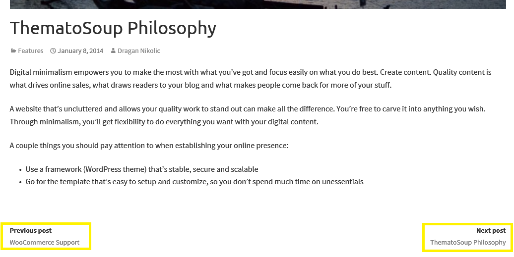Gumbo theme supports WordPress SEO plugin. To enable its breadcrumb function, go to SEO > Internal links > Enable Breadcrumbs.
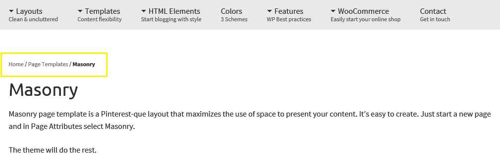You can add a custom logo image and use it instead of text based site title. This is also done from Theme Customizer screen.
Once at Theme Customizer screen, expand Site title and tagline section. There you’ll be able to upload a new image or select one you previously uploaded. Logo image height should be 100px and its width should be 300px or less.
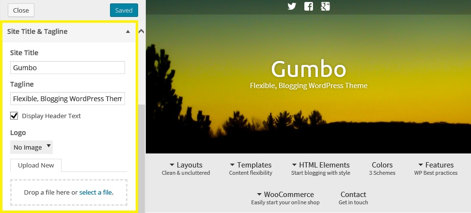If a logo image is used it will replace textual site title. You can remove logo image by clicking “Remove Image” link.
There are three layouts you can choose from:
Default layout can be set and previewed in Layout section of Theme Customizer (Appearance > Customize).
If you select “no sidebar” layout, your primary sidebar widgets will not be shown. You can use other widget areas to transfer the widgets.
After you’ve set your default layout you can override it on a post/page basis. That makes it possible to have a left sidebar post even though you’ve set your default layout to right or no sidebar. In addition to this you can hide header and footer and assign different sidebar to each post/page.
First you need to enable Layout Options in Screen Options.
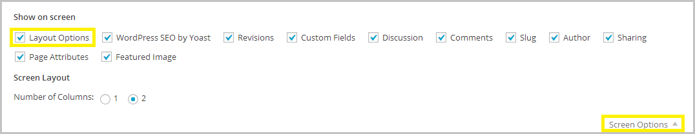After you do this you’ll find Layout Options meta box underneath your post and pages.
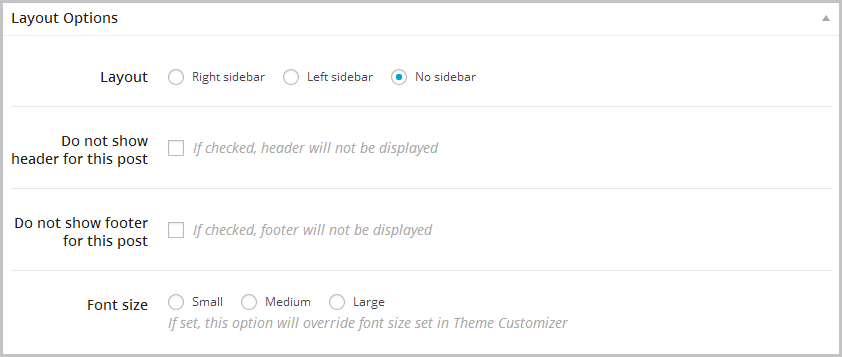There are several options you’re in control of:
With these, you can create everything from landing pages using no header and no footer options, to featured posts using no sidebar and large font size.
Note: Usage of free WooSidebars plugin is recommended if you’d like to use custom widget areas in certain posts of pages.
Header layouts can also be found in Customizer > Layout. You can choose from three different layouts:
Gumbo has three color schemes:
In addition to this, you can use color pickers to set your site’s:
All color options are located in Colors section of Theme Customizer screen (Appearance > Customize).
You can showcase your blog’s top posts by assigning them a predefined tag. It’s also possible to select number of posts shown in featured posts slider.
To do this, head over to Customizer > Featured Content and select the tag and number of posts that you wish to feature on your front page.
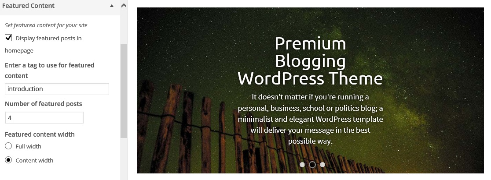There are two options for featured content width:
You can set a custom page template to any page by using Template dropdown in Page Attributes meta box, located below the Publish button. Several page templates are available.
Authors page settings let you tweak your Authors template. You can select the order of authors by their name or post count and show them in ascending or descending order.
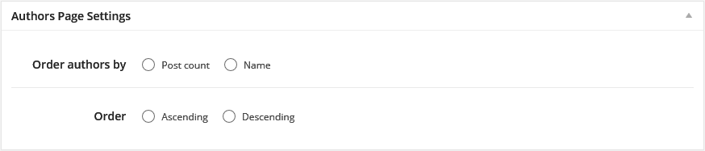You can select how many posts per page you want to show, whether you want to hide the page title or you can exclude certain post categories.
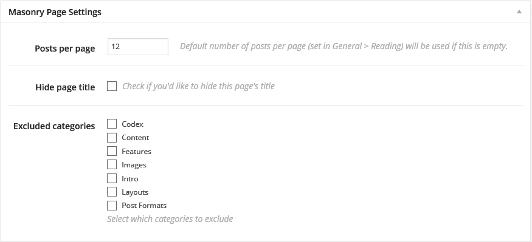A page template every website should have. What easier way to allow readers to browse and find the piece they’re looking for, than creating a sitemap of your website.
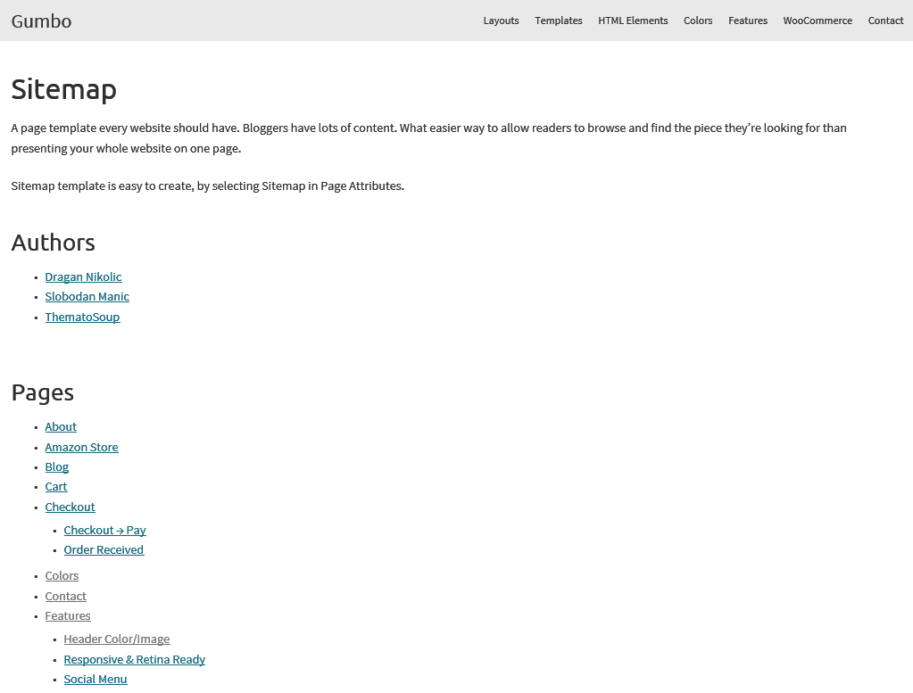This HTML template is easy to create, by selecting Sitemap in Page Attributes.
Widgetized Template works together with Widgetized Page widget area and has some specific options, which you can enable in Screen Options of your page editor:
You can also embed videos and display them above, below, right or left of the text.
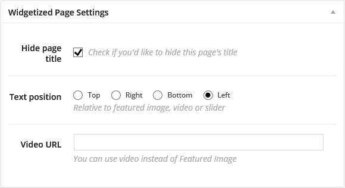If you want to achieve that Tumblr-like blog layout, post formats are the way to go. Following post formats are available:
When you’re creating a new post or editing an existing one, use Format meta box, located below Publish button to set post’s format.
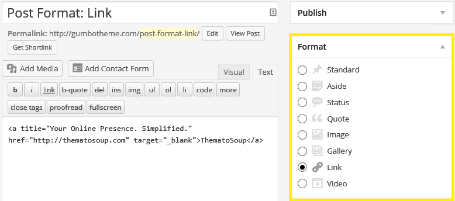To read more on Post Formats, follow this link:
http://codex.wordpress.org/Post_Formats
Featured images (or post thumbnails) are supported and used throughout the theme.
You can assign a featured image (post thumbnail) to any post or page. Edit the post or page you’d like to assign featured image to, then look for Featured Image meta box under the Publish meta box. If it’s not there, make sure Featured Image is checked in Screen Options (top right of the screen).
Click the “Set featured image” link, then use WordPress image uploader to upload a new image or pick one from Media Library. Once you have uploaded and selected the image, click Set featured image button.
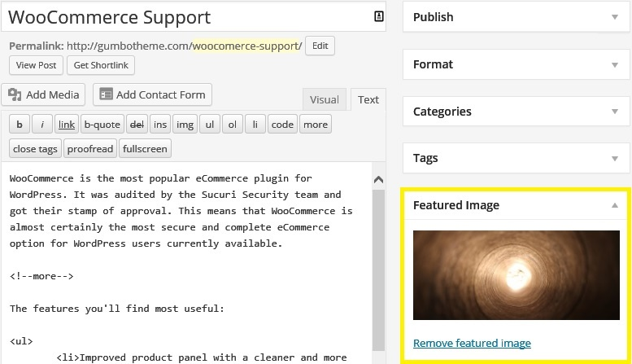It’s best to use images at least 1000px wide if you’re using no sidebar layout or featured content area and at least 640px wide in layouts that have sidebar on right or left side.
This is how a post, with featured image set, may look.
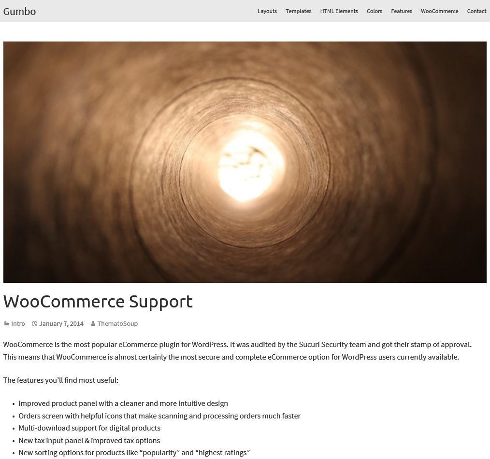http://wordpress.org/plugins/woocommerce/
http://wordpress.org/plugins/woosidebars/
http://wordpress.org/plugins/jetpack/
http://wordpress.org/plugins/slimjetpack/
http://wordpress.org/plugins/tha-hooks-interface/
http://wordpress.org/plugins/wordpress-seo/
http://tgmpluginactivation.com/
https://github.com/zamoose/themehookalliance
https://github.com/WebDevStudios/Custom-Metaboxes-and-Fields-for-WordPress
https://github.com/slobodan/WordPress-Theme-Customizer-Boilerplate